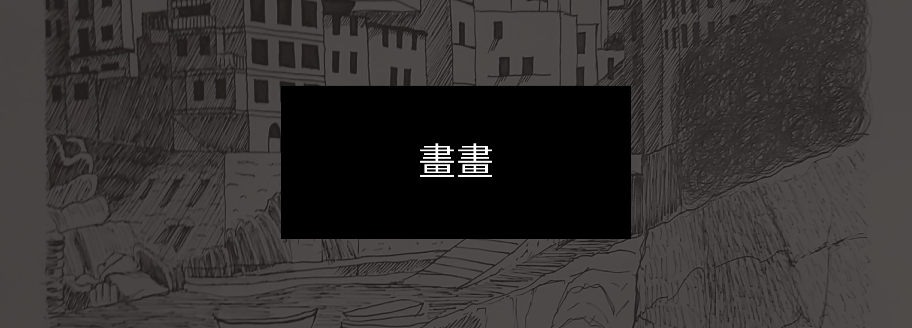
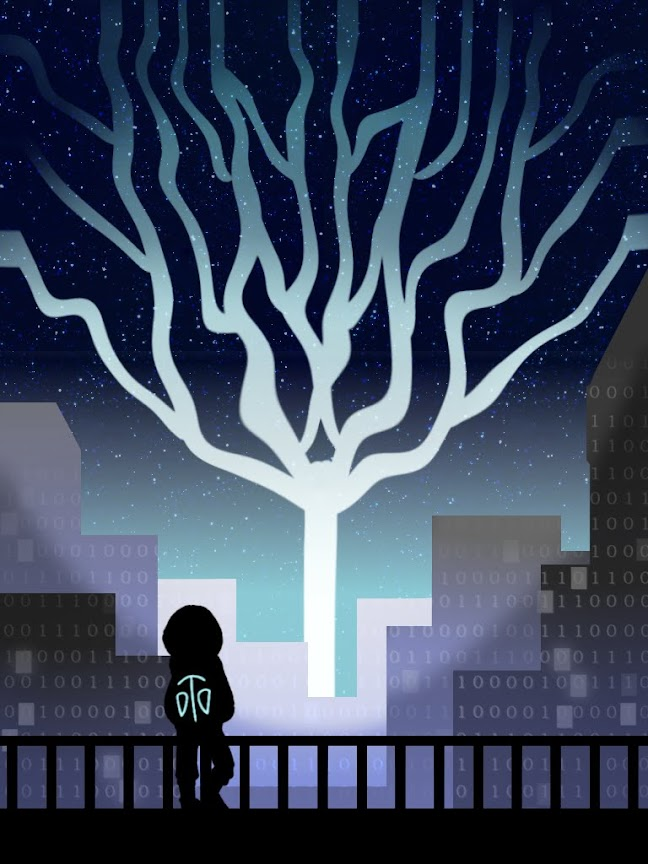
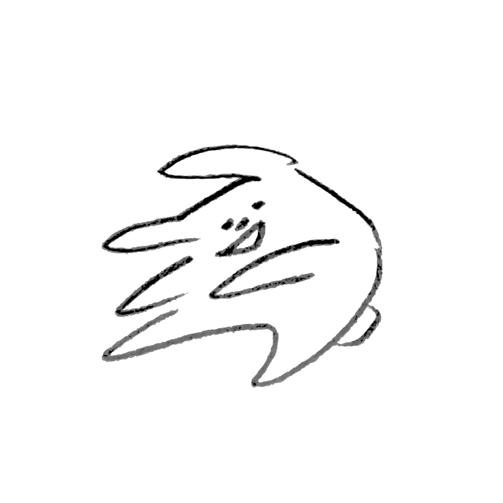
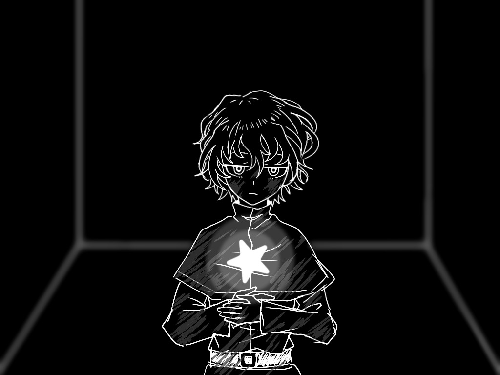

我的網站
Home
My Interests
畫畫
音樂
遊戲
日本文化
Search

主要是作品展示的部分。大多都是小廢圖。
Undertale 8th Anniversary
miku 16th
Cyber City
溫暖冬日
Ashe
療癒用
過動兔兔
對上班族的想像
漆黑的房間
八名人類
-2023/9/15-
恭喜miku維持16歲16年了（？）
-2023/8/31-

之前幫系上畫的海報（雖然沒被選上）。
主要概念是維持網路城市運作的能量暴走了。
-2023/4/5-
外頭雖然寒冷，不過家裡非常溫暖
-2023/3/3-
Witch's Heart中的角色——Ashe
-2023/1/25-
「辛苦了！要不要喝杯熱可可呢？」
-2022/12/14-

（瘋狂亂動）
-2022/11/5-
熬夜加班或許是每天的日常。
-2022/5/9-

究竟是什麼在支撐著我的精神？
-2021/10/14-